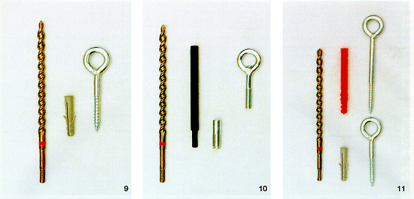
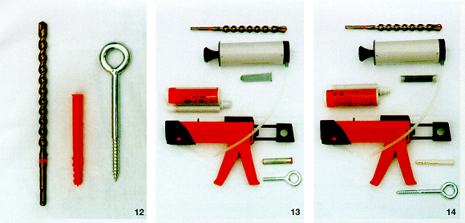

| Bild 9 Empfohlene Verankerungstechnik für Beton: Nylondübel 14/70. |
Bild 10 Empfohlene Verankerungstechnik für Beton: Kompaktdübel. |
Bild 11 Empfohlene Verankerungstechnik für Nylondübel 14/135 (oben) und für Kalksandvollsteine: Nylondübel 14/70 (unten). |

| Bild 12 Empfohlene Verankerungstechnik für Leichtbeton-Hohlblock: Nylondübel 14/135. |
Bild 13 Empfohlene Verankerungstechnik für Leichtbeton-Hohlblock: Injektionsanker. |
Bild 14 Empfohlene Verankerungstechnik für Leichtbeton-Hohlblock: Injektionsanker mit Dübel und Gerüstschraube. |